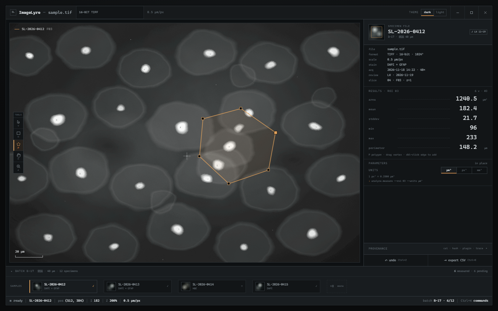

| 维度 | A4 · 暗 | E4 · 纸 |
|---|---|---|
| 第一眼 | 工程工作站：深色、等宽、像一台仪器 | 标本档案：纸白、朱红、像一页记录 |
| 溯源位置 | 折叠在右栏底部，需要展开 | 折叠在右栏底部，展开后一条校准链串起哈希与插件 |
| 批次条 | 12 张里 4 张可见 + 更多 | 8 张 S-01…S-08，当前描黑 |
| 工具与命令 | 画面左缘 5 个键 + Ctrl K | 左缘 34px 细条 + 标题栏 Ctrl K |
| 最大风险 | 折叠让「有来路」退到第二眼；右栏下段留白 | 400px 一列四段在 125% 缩放下会挤 |
| 像谁 | 像一台科研工程工作站，不像任何现成软件 | 像一套标本档案系统，不像任何现成软件 |
两版都解决了 C3 的问题：没有 Photoshop 的选项栏、文档标签与图层面板；测量的「来路」与「归属」第一次同屏。